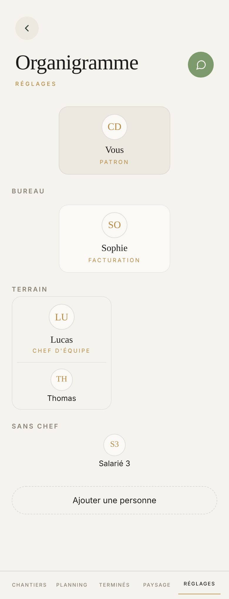
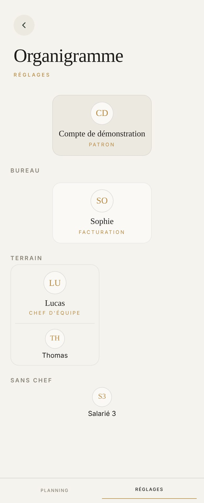
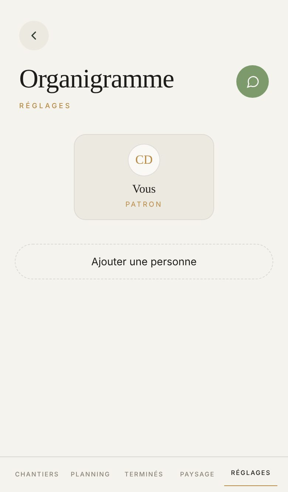

Proposé
Aujourd'hui



Ce qui change
- L'arbre se lit de haut en bas : le patron, un trait d'or, le bureau, un trait d'or, le terrain.
- Les rôles s'écrivent en toutes lettres et en or : Patron, Facturation, Chef d'équipe. Le nom passe en gras.
- Le chef d'équipe porte ses gars dans sa plage, en pleine largeur ; ceux qui n'ont pas de chef ont la leur.
- Toucher quelqu'un ouvre une feuille qui monte, au lieu d'une carte qui s'ouvre sous l'arbre : touchez Thomas, puis Lucas. Ce que vous y changez se range tout de suite dans l'arbre.
- Les gars d'un chef se cochent dans des cases dorées, à la taille du doigt.
- Ajouter une personne devient le seul bouton plein, au-dessus de la barre, avec les bouts ronds de l'appli (sa demande du 26 octobre).
Ce qui ne bouge pas
- Tout le monde le lit, vous seul le changez : chez un salarié, rien ne se touche, ni bouton, ni feuille.
- Un gars n'a qu'un chef ; un chef n'a pas de chef ; un gars dont le chef perd son titre tombe dans « Sans chef », il ne disparaît pas.
- « Sans chef » ne s'écrit que s'il y a au moins un chef ; « Bureau » que s'il y a un commercial ou la facturation.
- Nouvelle personne : un salarié, un commercial ou la facturation. Un salarié se nomme ici, avec son chef ; les deux autres vont à Nouveau compte, le rôle déjà choisi. Vingt personnes au plus sur le terrain.
- Les têtes sont celles de Mon compte et d'Équipe, une seule photo par personne.